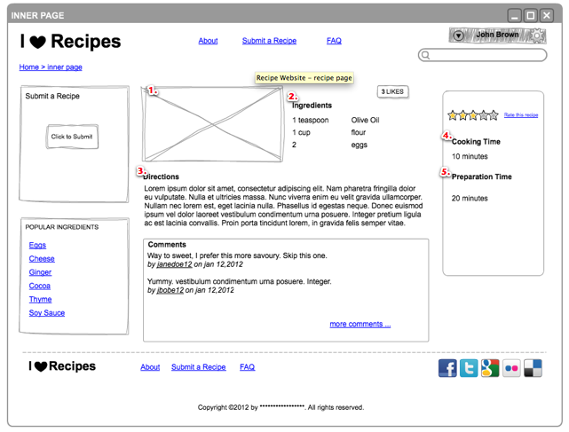

Flask is a very simple micro-framework and as a result it is easy to get started quickly without having to learn lots of additional concepts. So far we have been able to manage with the functionality that Flask provides such as:
We will need to be able to
When we come upon something that Flask cannot do we then import modules. For example if you need to provide third-party authentication for facebook, twitter and google, Flask doesn’t have that functionality built in. For these additional features we will rely on third-party modules.
We will use the following modules to implement:
XXX Fixme (complete this section)
Let’s review the recipe page, here is the mockup.
Our recipe will have the following properties:
Other properties might include:
Let’s prepare a database to store our recipes. We’ll use sqlite for development as it is much quicker than setting up a full production database like MySQL.
We’ll create some supporting files: database.py to manage database connections and models.py to define the items that will be modelled by our database.
Install flask-sqlalchemy:
source venv/bin/activate
pip install flask-sqlalchemy
Create a database.py file for setting up our sqlite database
from sqlalchemy import create_engine
from sqlalchemy.orm import scoped_session, sessionmaker
from sqlalchemy.ext.declarative import declarative_base
engine = create_engine('sqlite:////tmp/test.db', convert_unicode=True)
db_session = scoped_session(sessionmaker(autocommit=False,
autoflush=False,
bind=engine))
Base = declarative_base()
Base.query = db_session.query_property()
def init_db():
# import all modules here that might define models so that
# they will be registered properly on the metadata. Otherwise
# you will have to import them first before calling init_db()
import yourapplication.models
Base.metadata.create_all(bind=engine)
For more information on SQLAlchemy and Flask visit: http://flask.pocoo.org/docs/patterns/sqlalchemy/
XXX FIXME, hook up our project to a mysql database need
File upload Custom template XXX FIXME define the recipe content type
Facebook and Twitter login to support comments
XXX Fixme, need